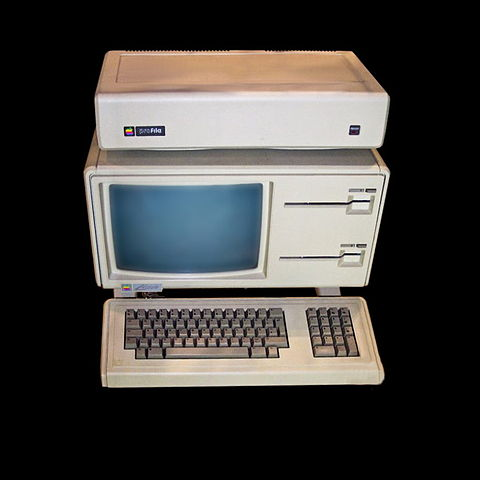
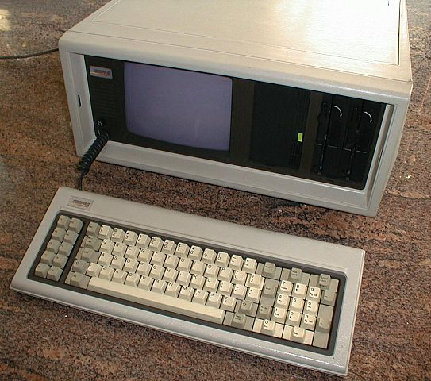

"Design is not what it looks like and feels like. Design is how it works." - Steve Jobs
"Science is about knowing; engineering is about doing." - Henry Petroski
"The walls between art and engineering exist only in our minds" - Theo Jansen
"A good scientist is a person with original ideas. A good engineer is a person who makes a design that works with as few original ideas as possible." - Freeman Dyson
"[requirements, architecture, process, techniques]. Of course the goals are in conflict, and engineering is the art of making tradeoffs, for instance among features, speed, cost, dependability, and time to market." - Butler Lampson
Hints For Computer System Design
- Butler Lampson (1983) -
... or how to engineer less sucky systems
Hardware | Software
Functionality -> Speed -> Fault Tolerance
Industry Status - Hardware
Apple - Lisa
Compaq - IBM clone
Gavilan SC - "Laptop"

"Apple Lisa". Licensed under CC BY-SA 3.0 via Wikimedia Commons - https://commons.wikimedia.org/wiki/File:Apple_Lisa.jpg#/media/File:Apple_Lisa.jpg

"Compaq portable". Licensed under Public Domain via Wikimedia Commons - https://commons.wikimedia.org/wiki/File:Compaq_portable.jpg#/media/File:Compaq_portable.jpg"Gavilan SC" by Rdc5 - Own work. Licensed under GFDL via Wikimedia Commons.
Industry Status - Software/Networking
Lotus 1-2-3 - Autocad - MS DOS 2.0 - Word - GNU
DNS - IEEE 802.3 - Physical Ethernet - MIDI
But That Was Then ...
Hardware | Software | Peopleware
Fault Tolerance -> Speed -> Functionality
Fault Tolerance
End-to-End
Reliability comes with Error Handling
Log Updates
Transactions
Speed
Split Resources
Use Static Analysis
Cache Answers
What's the correct amount of RAM for my SQL box?
MORE
Background Workers
Batch Processing
Safety First
Floatsam & Jetsam
Functionality
KIS(S)
Do one thing really well
Interfaces capture minimum requirements of an abstraction
Don't generalize, generalizations are generally wrong
Corollaries
Build basic interfaces that are blazing fast
How do we know it's fast? Telemetry & Logging
"... it is normal for 80% of the time to be spent in 20% of the code, but a priori analysis or intuition usually can’t find the 20% with any certainty." - Lampson
Procedure Arguments
Sort, Filter, Select
Make the Client Pay
Unix streaming/piping
Continuity
Keep basic interfaces stable
"When a system grows to more than 250K lines of code the amount of change becomes intolerable; even when there is no doubt about what has to be done, it takes too long to do it. There is no choice but to break the system into smaller pieces related only by interfaces that are stable for years."
{kind=link}